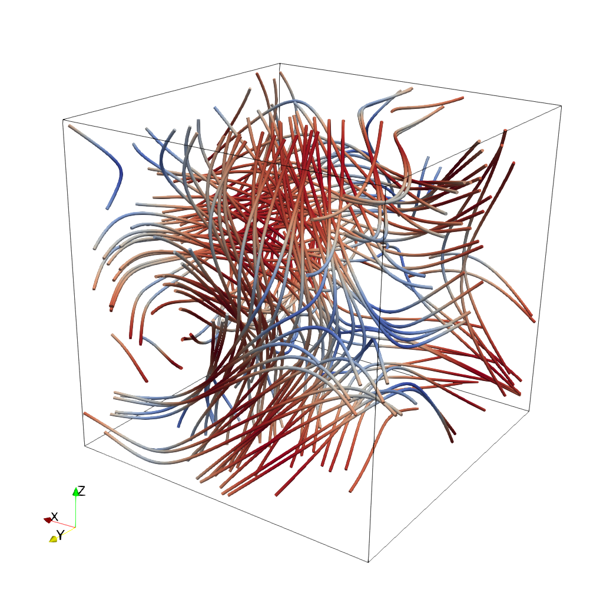

🎯 SciVisAgentBench Evaluation Report
📊 Overall Performance
Overall Score
57.4%
1159/2020 Points
Test Cases
40/48
Completed Successfully
Avg Vision Score
58.2%
Visualization Quality
PSNR (Scaled)
14.81 dB
Peak SNR (15/40 valid)
SSIM (Scaled)
0.7359
Structural Similarity
LPIPS (Scaled)
0.2778
Perceptual Distance
Completion Rate
83.3%
Tasks Completed
ℹ️ About Scaled Metrics
Scaled metrics account for completion rate to enable fair comparison across different evaluation modes. Formula: PSNRscaled = (completed_cases / total_cases) × avg(PSNR), SSIMscaled = (completed_cases / total_cases) × avg(SSIM), LPIPSscaled = 1.0 - (completed_cases / total_cases) × (1.0 - avg(LPIPS)). Cases with infinite PSNR (perfect match) are excluded from the PSNR calculation.
🔧 Configuration
📝 ABC
38/45 (84.4%)
📋 Task Description
Your agent_mode is "chatvis_claude-sonnet-4-5_exp1", use it when saving results. Your working directory is "D:\Code\SciVisAgentBench\SciVisAgentBench-tasks\paraview", and you should have access to it. In the following prompts, we will use relative path with respect to your working path. But remember, when you load or save any file, always stick to absolute path.
Load the ABC (Arnold-Beltrami-Childress) flow vector field from "ABC/data/ABC_128x128x128_float32_scalar3.raw", the information about this dataset:
ABC Flow (Vector)
Data Scalar Type: float
Data Byte Order: Little Endian
Data Extent: 128x128x128
Number of Scalar Components: 3
Data loading is very important, make sure you correctly load the dataset according to their features.
Create streamlines using a "Stream Tracer" filter with "Point Cloud" seed type. Set the seed center to [73.77, 63.25, 71.65], with 150 seed points and a radius of 75.0. Set integration direction to "BOTH" and maximum streamline length to 150.0.
Add a "Tube" filter on the stream tracer to enhance visualization. Set tube radius to 0.57 with 12 sides.
Color the tubes by Vorticity magnitude using the 'Cool to Warm (Diverging)' colormap.
Show the dataset bounding box as an outline.
Use a white background. Render at 1024x1024.
Save the visualization image as "ABC/results/{agent_mode}/ABC.png".
(Optional, but must save if use paraview) Save the paraview state as "ABC/results/{agent_mode}/ABC.pvsm".
(Optional, but must save if use python script) Save the python script as "ABC/results/{agent_mode}/ABC.py".
Do not save any other files, and always save the visualization image.
🖼️ Visualization Comparison
Ground Truth

Agent Result
Image not available📏 Vision Evaluation Rubrics
📊 Detailed Metrics
Visualization Quality
23/30
Output Generation
5/5
Efficiency
10/10
Completed in 28.87 seconds (excellent)
PSNR
14.52 dB
SSIM
0.8049
LPIPS
0.1405
Input Tokens
1,707
Output Tokens
2,266
Total Tokens
3,973
Total Cost
$0.0391